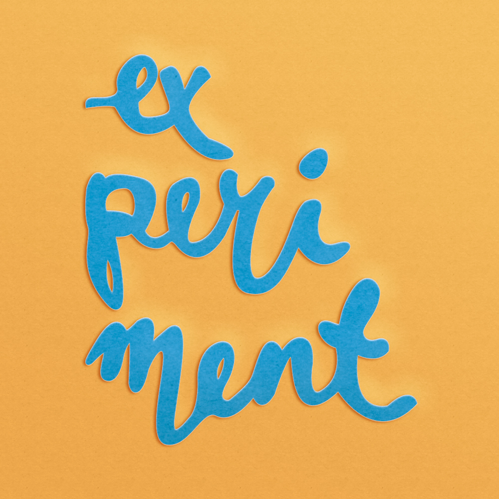
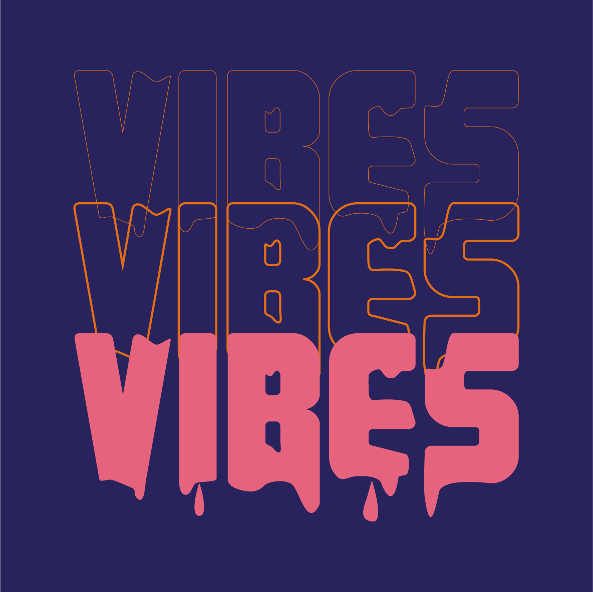
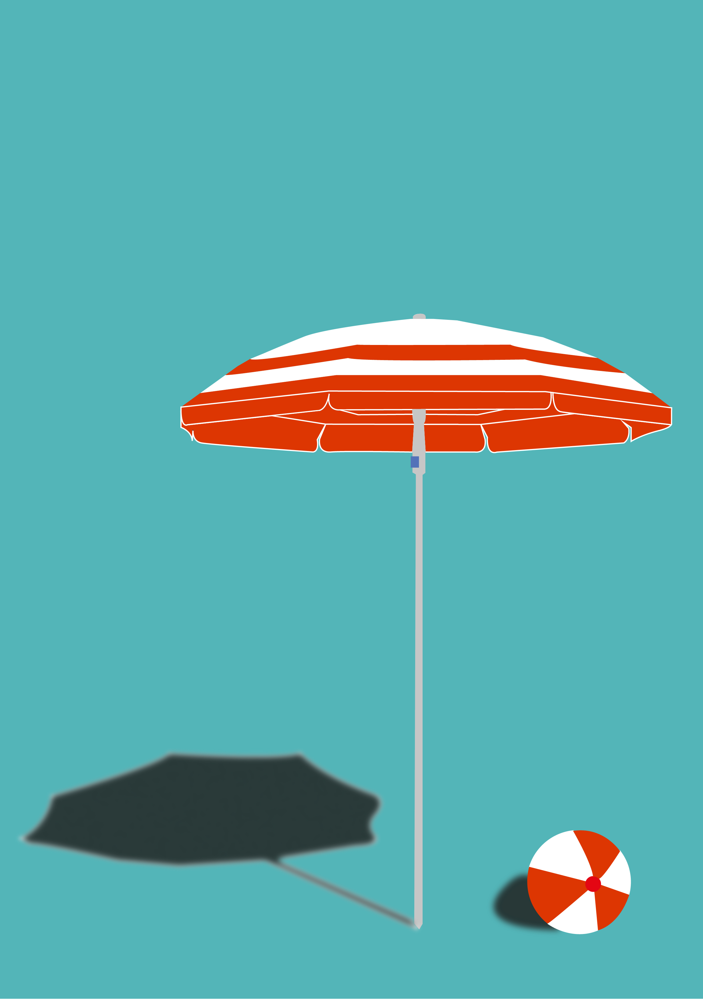

ABOUT
Hi! My name is Suzanne Akgun, a Belgium based creative. I’m mainly inspired by colors, human beings in general and the streets.
I like working with people in many different ways. My history of working in the social sector with kids and people with a disability, made me think on another level when it comes to graphic design. I have a high feeling of empathy that not everyone else masters. My aim is to bring these feelings and emotions to live in in my visuals.
I’m still in school and I've got a lot to learn, but I’m hungry to grow. Get in touch!
  